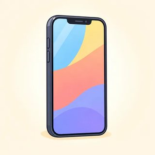
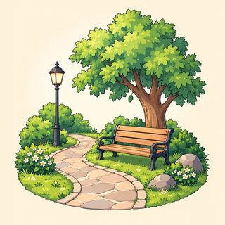
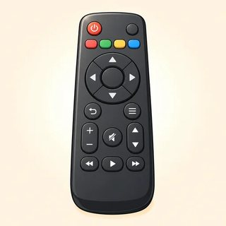

Module 7
Real-World Communication
Speak up. Stand up for yourself. Present yourself.
Calm, polite and clear gets results
- 7.1 Discussion: In my opinion… · I couldn't agree more. · I see your point, but…
- 7.2 Getting things fixed: I'm afraid there's been a mistake. Would it be possible to…?
- 7.3 Job interviews: I've been working as… · For example… · STAR stories
What do you think about…?






| casual | If you ask me, … · I think … |
|---|---|
| neutral | In my opinion, … · Personally, I feel … |
| careful / strong | It seems to me that … · As far as I'm concerned, … |
👍 Agree — and agree about yourself
| strong | Exactly! · Absolutely. · I couldn't agree more. |
|---|---|
| warm | That's a good point. · I know what you mean. |
| + I love it. | So do I. |
| + I'm tired. | So am I. |
| − I don't drive. | Neither do I. |
| − I can't swim. | Neither can I. |
A little or completely? (Completely.)
= "I couldn't care less"? (No! That's "not interested.")
1 Acknowledge → 2 but → 3 your view
🙂 "I see your point, but I think it's a bit too expensive."
Which person will people listen to? (The second.)
Did she agree? (No.) Was she rude? (No.)
| I see your point, but… |
| I'm not so sure (about that). |
| I'm afraid I disagree. |
| Actually, I think… (= in fact, not "now") |
| That may be true, but… |
| Yes, but don't you think…? |
❓ Bring people in · 🧸 soften your words
- What do you think, Mai?
- How do you feel about…?
- Do you agree?
- Let's hear from someone new.
- Maybe it depends on the person.
- I suppose you could be right.
- To be honest, I'm not a fan.
- It's a bit / kind of stressful.
Home or office?
Nadia: Personally, I feel much happier working at home.
Tom: I'm not so sure. I see your point about the commute, but to be honest, I get a bit lonely.
Nadia: That's a good point. But don't you think you concentrate better at home?
Priya: As far as I'm concerned, the best answer is a mix.
Nadia: Exactly! I couldn't agree more.
Tom: Actually, that does sound sensible. What do you think, Priya?
Groups of 4–5 · roles · 3 tokens each
- Chair asks everyone · Timekeeper · Observer (bingo, silent) · Summarizer
- 1 min: plan · Round: one opinion each
- 6 min: discuss · a token in the middle each time you speak
- Each person: opinion + reason · agree · disagree politely · ask · soften
Does the observer talk? (No.)
No tokens left? (Wait.)
How do you disagree? ("I see your point, but…")
Is there a winner? (No!)
Describe it clearly



🧸 Opener → 🔎 Problem → 🙏 Request
| 1 | Excuse me, I'm sorry to bother you, but… · I'm afraid there's been a mistake. |
|---|---|
| 2 | There's a problem with my bill. · The heating doesn't work. |
| 3 🪜 | Would it be possible to send a new one? ▸ Would you mind sending…? ▸ I'd appreciate it if you could… ▸ Could you…? |
Sorry + action · or ask for a manager
| 🧑💼 staff | I do apologize. I'll sort that out right away. |
|---|---|
| ⬆️ still no? | I understand, but I'd like to speak to a manager, please. |
| 📞 phone | I'm calling about… · S-I-L-V-A · four-four-oh-nine · Could I have a reference number? |
Dear Customer Service Team,
I'm writing to complain about…
On May 3, I… Unfortunately, …
I would appreciate it if you could…
I look forward to hearing from you.
Sincerely, …
"I'm afraid I can't give refunds."
Agent: Thank you for calling City Power. How can I help you?
Caller: Hi. I'm calling about my bill. I think I was charged twice this month.
Agent: I see two payments of $86, but I'm afraid I can't give refunds.
Caller: I understand, but the second payment was a mistake. Would it be possible to speak to a supervisor?
Supervisor: You're right. I do apologize. We'll refund the $86 in five to seven days.
Caller: Thank you. Could you send me an email to confirm that?
🏪 Counter · 📞 Phone · ✉️ Desk
- A = customer card · B = staff card · swap each card
- 📞 back to back: spell, give numbers, get a reference number
- Staff says "I can't"? Escalate politely. B turns the card → manager
- ✉️ write an email together, swap, reply: sorry + action
Can you see your partner on the phone? (No.)
Staff says no? ("I understand, but…")
Shout? (Never!)
When do you move? (When the teacher claps.)
What have you done? What are you good at?


I've been working as… for / since…
| how long | I've been working as a cook for three years / since 2021. |
|---|---|
| experience | I've worked in two restaurants. · I've trained five new colleagues. |
| + -ing | I'm responsible for training… · I'm good at solving… · I have experience in sales. |
| words | apply for a position · a colleague · a deadline · strengths / weaknesses |
"Tell me about yourself."
| NOW | I'm currently working as a delivery driver. |
|---|---|
| BEFORE | I've been driving for two years. Before that, I worked in a supermarket. |
| NEXT | Now I'm looking for a full-time position. That's why I applied for this job. |
- Why do you want this job?
- What are your strengths? → + For example…
- Your biggest weakness? → I used to…, but I've learned to…
- Five years from now? · Any questions for us? Yes!
⭐ STAR = proof
| S · Situation | Last winter, a snowstorm closed a road on my route. |
|---|---|
| T · Task | I had fifteen deliveries to finish before six. |
| A · Action | I called my supervisor, planned a new route and phoned my customers. |
| R · Result | I delivered every package, and two customers wrote nice reviews. |
🧑💼 Interviewer · 🙋 Candidate · 👀 Observer
- 5 min interview · 2 min feedback · then rotate
- Interviewer: 5–6 cards, one "Tell me about a time…"
- Candidate: notes, not full sentences · one STAR · one question
- Observer: checklist → one great thing + one tip
Read full sentences? (No, just notes.)
Which card needs STAR? ("Tell me about a time…")
Observer writes? (One great thing, one tip.)
Profile card OK? (Yes.)
Module 7 done 🎉
- 💬 Speak up: In my opinion… · I see your point, but… · What do you think?
- 🛠️ Stand up for yourself: I'm afraid there's been a mistake. Would it be possible to…? · I'd like to speak to a manager.
- 💼 Present yourself: I've been working as… · I'm good at… For example… · STAR
Homework: online lessons 7.1–7.3 with 🔊. Next: Module 8, question tags and the final project.